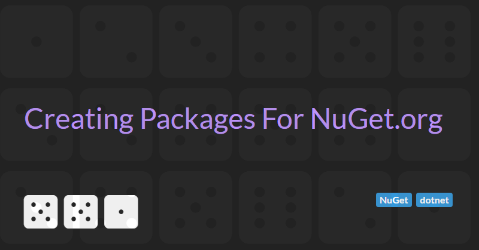

Creating Packages For NuGet.org
NuGet.org is the package manager for .NET and is the primary way of distributing .NET code that you have published on GitHub.
This article describes how to create a professional looking package for your open source project. A well defined package can help increase adoption and provide help and links for consumers of your package.
Getting started
To get started you will need to create a Microsoft Account to sign in to Nuget.org and be able to publish packages.
Creating a basic package is as simple as adding some extra attributes to your C# project file (.csproj).
<PropertyGroup>
<PackageId>[Name of your package - must be unique on NuGet.org]</PackageId>
<Version>[The version number - use semver convention]</Version>
<Authors>[Your name]</Authors>
<Company>[(Optional) Your company name]</Company>
<Description>[A short description of your package (don't add line breaks)]</Description>
<PackageTags>[A bunch of ";" separated tags to help users find your package</PackageTags>
</PropertyGroup>
You can also add the GeneratePackageOnBuild property to your project file to ensure that the package is created when the project is built.
<PropertyGroup>
<GeneratePackageOnBuild>true</GeneratePackageOnBuild>
</PropertyGroup>
In addition to this basic information you can make a package look more professional by:
- Include a licence file in your Github repository
- Including a package logo
- Including a package readme file (with links to your licence file, version changes and examples)
- Including symbols in your package
- Include a source link in your package to link back to GitHub
- Adding NuGet badges to GitHub using shields.io
- Add a build pipeline status badge to GitHub
Include a licence file
Including a licence file in your package's public GitHub repository allows consumers to know whether your package is free to use.
GitHub have created choosealicense.com to help you choose the most appropriate licence for your package. In most cases the MIT licence (see below) is the simplest option.
MIT License
Copyright (c) [year] [full name]
Permission is hereby granted, free of charge, to any person obtaining a copy
of this software and associated documentation files (the "Software"), to deal
in the Software without restriction, including without limitation the rights
to use, copy, modify, merge, publish, distribute, sublicense, and/or sell
copies of the Software, and to permit persons to whom the Software is
furnished to do so, subject to the following conditions:
The above copyright notice and this permission notice shall be included in all
copies or substantial portions of the Software.
THE SOFTWARE IS PROVIDED "AS IS", WITHOUT WARRANTY OF ANY KIND, EXPRESS OR
IMPLIED, INCLUDING BUT NOT LIMITED TO THE WARRANTIES OF MERCHANTABILITY,
FITNESS FOR A PARTICULAR PURPOSE AND NONINFRINGEMENT. IN NO EVENT SHALL THE
AUTHORS OR COPYRIGHT HOLDERS BE LIABLE FOR ANY CLAIM, DAMAGES OR OTHER
LIABILITY, WHETHER IN AN ACTION OF CONTRACT, TORT OR OTHERWISE, ARISING FROM,
OUT OF OR IN CONNECTION WITH THE SOFTWARE OR THE USE OR OTHER DEALINGS IN THE
SOFTWARE.
You can also add licence information directly into to package by adding some extra properties to your csproj file.
If you're licensing the package under a common license, like MIT or BSD-2-Clause, use PackageLicenseExpression property and the associated SPDX license identifier. For example:
<PropertyGroup>
<PackageLicenseExpression>MIT</PackageLicenseExpression>
</PropertyGroup>
When packing a license file, use the PackageLicenseFile property to specify the package path, relative to the root of the package. In addition, make sure that the file is included in the package. For example:
<PropertyGroup>
<PackageLicenseFile>LICENSE.txt</PackageLicenseFile>
</PropertyGroup>
<ItemGroup>
<None Include="NuGet\LICENSE.txt" Pack="true" PackagePath="\"/>
</ItemGroup>
Including a logo
A package logo can make your package stand out more on NuGet.
When packing an icon image file, use PackageIcon property to specify the icon file path, relative to the root of the package. In addition, make sure that the file is included in the package. Image file size is limited to 1 MB. Supported file formats include JPEG and PNG. Microsoft recommend an image resolution of 128x128 pixels.
Add the following code to your components csproj file to include a package logo:
<PropertyGroup>
<PackageIcon>icon.png</PackageIcon>
</PropertyGroup>
<ItemGroup>
<None Include="NuGet\icon.png" Pack="true" PackagePath="\"/>
</ItemGroup>
Including a Readme
Include a readme file in your NuGet package to make your package details richer and more informative for your users.
The package readme should include:
- An introduction to your package
- Some simple code examples of how to use your package
- Links to more comprehensive documentation including the GitHub project readme file and licence file
- How to contribute, if applicable.
- A version history table indicting the major changes in different version of the package
Add the following code to your components csproj file to include a package readme file:
<PropertyGroup>
<PackageReadmeFile>PackageReadme.md</PackageReadmeFile>
</PropertyGroup>
<ItemGroup>
<None Include="NuGet\PackageReadme.md" Pack="true" PackagePath="\"/>
</ItemGroup>
Including Symbols
A good debugging experience relies on the presence of debug symbols as they provide critical information like the association between the compiled and the source code, names of local variables, stack traces, and more. You can use symbol packages (.snupkg) to distribute these symbols and improve the debugging experience of your NuGet packages.
To include symbols add the following properties to your .csproj file:
<PropertyGroup>
<IncludeSymbols>true</IncludeSymbols>
<SymbolPackageFormat>snupkg</SymbolPackageFormat>
</PropertyGroup>
Include a Source Link
To improved the debugging experience further you can also include a Source Link.
Source Link is a technology that enables source code debugging of .NET assemblies from NuGet by developers. Source Link executes when creating the NuGet package and embeds source control metadata inside assemblies and the package. Developers who download the package and have Source Link enabled in Visual Studio can step into its source code. Source Link provides source control metadata to create a great debugging experience.
To add Source Link support to a package we first need to install the appropriate Source Link build package into our .csproj file.
For projects hosted by GitHub or GitHub Enterprise reference Microsoft.SourceLink.GitHub like so:
<ItemGroup>
<PackageReference Include="Microsoft.SourceLink.GitHub" Version="1.1.1" PrivateAssets="All"/>
</ItemGroup>
Once this is done we need to add a couple of extra properties to the .csproj file to enable Source Link.
<PropertyGroup>
<PublishRepositoryUrl>true</PublishRepositoryUrl>
<EmbedUntrackedSources>true</EmbedUntrackedSources>
</PropertyGroup>
Adding NuGet badges to GitHub
Once the package has been uploaded to NuGet, shields.io can be used to add badges to the GitHub project readme page to show the number of downloads from NuGet and the current package version.
The following MarkDown can be added to include the badges:


Add a build pipeline status badge.
In addition to NuGet badges it can be useful to also include build pipeline status badges.
The way this is done is largely dependent on the build pipeline.
For Azure DevOps, follow the instructions to add an Azure DevOps pipeline status badge and add the following Markdown to the GitHub project readme page:

Testing your Nuget package
If your .csproj file has been configured correctly then you a package should be generated in the bin\Debug or bin\Release folder when you build your project.
You can verify that the package is correct before uploading to NuGet.org by uploading it to NuGet.info.